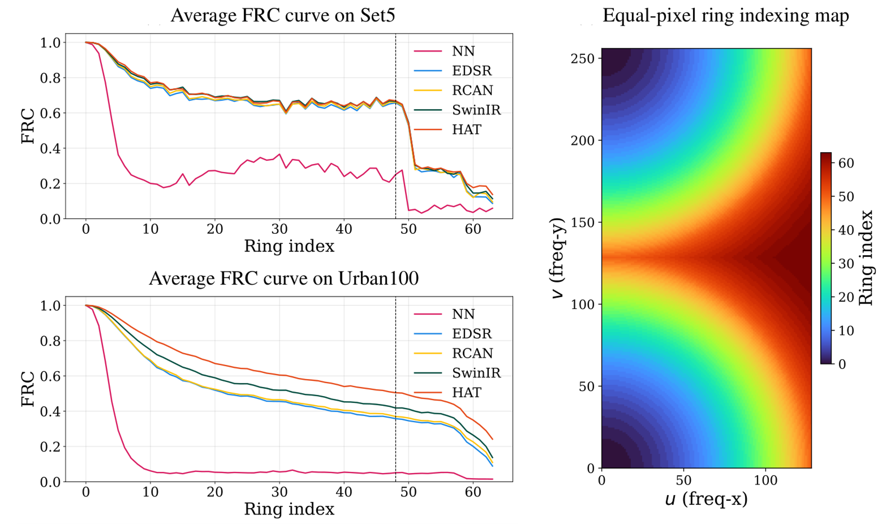

FRC-AUC: Measuring High-Frequency Fidelity

We compute Fourier Ring Correlation (FRC) between the SR output \(\hat{Y}\) and the ground truth \(Y\).
The 2D spectrum is partitioned into \(N=64\) equal-pixel rings \(\{\mathcal{R}_i\}_{i=0}^{N-1}\).
Using your paper’s formulation, for a spatial frequency radius \(q\) we define:
\[
\mathrm{FRC}(q)=
\frac{\displaystyle\sum_{|\mathbf f|=q}F_{1}(\mathbf f)\,F_{2}^{*}(\mathbf f)}
{\displaystyle\sqrt{\left(\sum_{|\mathbf f|=q}|F_{1}(\mathbf f)|^{2}\right)
\left(\sum_{|\mathbf f|=q}|F_{2}(\mathbf f)|^{2}\right)}}
\, .
\]
We summarize the high-frequency band by averaging the top quartile of rings. With \(N=64\), the high-frequency index starts at
\(i_{\mathrm{HF}}=\lceil 0.75N\rceil = 48\). The FRC-AUC is:
\[
\mathrm{FRC\text{-}AUC} =
\frac{1}{N_{\text{HF}}}
\sum_{i=i_{\mathrm{HF}}}^{N - 1} \mathrm{FRC}_i,
\quad i_{\mathrm{HF}} = \lceil 0.75N \rceil = 48,
\quad N_{\text{HF}} = 16 \; (N - i_{\mathrm{HF}}).
\]
Top-Quartile Ring–Masked Reconstructions (Rings 48–63)

This visualization is not an FFT magnitude map. We keep only the top-quartile rings (48–63), zero out all other frequencies, and invert back to the spatial domain. FGA suppresses checkerboard-like high-frequency components near the Nyquist region while concentrating energy along true structural directions, yielding spatial patterns closer to the GT.
Empirically, FGA consistently boosts the high-frequency FRC bands across architectures/datasets, indicating closer spectral agreement with GT textures and fewer aliasing artifacts.